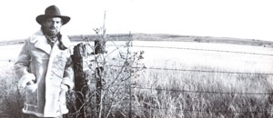
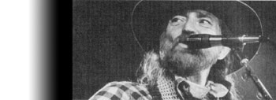

Farm Aid's Founder: Willie Nelson
Feature on the legendary country singer and songwriter and his founding and involvement with Farm Aid.
By Patrick Carr
May/June 1987
The Texas troubadour approves every check.
It's midwinter in Tampa, Florida, one of those southern growth centers succumbing rapidly to Yuppie homogenization-the place looks like one giant, upscale import auto dealership dropped just yesterday across the delicate semitropical landscape of swamp and mangrove and palmetto-and as usual the weather is warm going on stifling. Willie Nelson really needs the air conditioner humming peacefully in his mobile home away from home, the Silver Eagle Honeysuckle Rose.
In his own quiet, careful way, Willie's all business today. Waiting in the cool, dark comfort of the bus for the horde of people his presence will draw to town tonight, he's working hard: poring over snapshots of himself and his sister Bobbie outside the Abbot, Texas, church in which they learned to sing, for the cover of a genuine hard-core Christian mail-order gospel album; making little decisions about the set he and his band of hairy, red-blooded, honky-tonk gypsies will play tonight; ordering up a carefully nutritious chicken dinner from the kitchen bus that travels with his five-vehicle caravan, then forgetting to eat it; talking business, with little haste or waste of words or energy, on the radio telephone at his elbow.
The business concerns the usual megastar matters-movie promotion, investment opportunities, the touring schedule, a $1.5 million book contract-but also something seemingly out of place in this context: the Farm Aid cause, Mr. Nelson's first and only foray into public service. Cocooned amid Tampa's rapacious concrete consumerism, the former Bible salesman, honky-tonk infighter and latter-day multimillionaire is taking time to help the family farmers of his country fight back against government policy, big business and the economics of scale.
There is something rather special about Willie Nelson. It was he, after all, who united the rednecks and the hippies and the suburbanites of the 1970s in appreciation of a style of country music considered both archaic and impossibly uncommercial by the Nashville powers-that-were. Likewise his image-a lovely blend of longhair, cowboy, rebel, hardcore party legend and wise old man-is suggestive.
It's no wonder he's such an institution. You can look up to or down on some entertainers (Johnny Cash, Bruce Springsteen, Madonna, Paul McCartney), but Willie invites involvement, not distance. The dominant element of his stare-a thoroughly savvy serenity-is mighty trustworthy.
That invitation to trust must have been part of his image all along. Certainly it was during his late teenage years, when he was already getting ahead in the world by promoting dance concerts throughout east Texas, earning his percentage from acts like Bob Wills and His Texas Playboys, Milton Brown and the Brownies, Spade Cooley, and the legendary Ernest Tubb while he watched from the wings and learned their ropes. It also impressed the folks in the Nashville big leagues after Willie had decided to forgo his studies for the Baptist ministry in favor of a full-time career in the hillbilly highway nightlife; you need a lot more than even the kind of devastating song-writing talent Willie possesses to become a primary source for the Music Row hit machine the way he did in pretty short order. And when eventually his ambitions outstripped what Nashville was willing to offer and he made his legendary end run around Music Row, his aura so impressed the college hippies of Austin, Texas, that not too long after he'd been among them they began to buy posters proclaiming "Matthew, Mark, Luke and Willie," and to enshrine them in their places of fun and meditation.
That sort of adulation was to become common, but inserting Willie's name in the place of St. John was somewhat off the beam. Nelson is more your basic St. Paul type, an apostle of the distinctly worldly sort, and therefore he deserves a more worldly testimonial.
The best of these, perhaps, comes from a Nashville music business executive who negotiated with Willie at the point where, thanks to those Austin freaks and their counterparts across the nation, the man's music was in big, big, big demand. At the time Willie was managed by Neil Reshen, an outrageously aggressive New Yorker described by his client as "my mad dog on a leash."
"It was amazing, just wonderful," says the victim. "I've never seen anything like it. Neil was so bad-I mean, you really wanted to have the man arrested; the secretaries used to run for the bathroom when he showed up-that when you talked to Willie, it was like negotiating with Rebecca of Sunnybrook Farm, and you were so relieved you didn't have to deal with Neil that you gave Willie whatever he wanted. But, of course, what Neil wanted and what Willie wanted were the same things. They were working the good cop-bad cop scam, the oldest con in the world, but they did it so well you didn't realize what was going on till it was all over. And by then you'd done a deal you'd never have even dreamed of otherwise."
That's not all. You might expect the victim to be resentful, but he isn't. "Well, the man wasn't at all dishonest or unethical," he says. "Far from it, in fact. He just outplayed me, and he ended up getting what he really deserved. And all that means is that he's smarter than I am. I don't hate him. How can you hate Willie Nelson? He just has to turn that smile on you, and you're hooked. But now I take him seriously. He may be beautiful, but he ain't dumb."
Such a man-with his hard-earned combination of country compassion, common sense and carefully honed business skills-would have been the perfect choice if American farmers had gone looking for a leader in their hour of need. That's not how it happened, though. It was Willie who went unbidden to the farmers.
September 1985 was when it began, in Champaign, Illinois, as a notion kicked around between Willie and his crew in the wake of Bob Geldof's Live Aid marathon. As Willie recalls, in the low-to-vanishing key for which he is renowned, "I have no idea how it got started. I was just sitting in the bus . . ."
Like a large proportion of the projects Willie judges worthy, the 14-hour Farm Aid benefit moved from idea to action with little further ado. It was set up with minimum fuss and executed with slightly less toil and craziness than usually attend a mammoth outdoor music festival featuring multiple Major Entertainers. (Which figures. After more than a decade of organizing and hosting his legendary Fourth of July picnics, Willie is perhaps the world's premier mastermind of such events.) When it was all over-when Bob Dylan, the Beach Boys, Alabama, Billy Joel, Kris Kristofferson, Bon Jovi, Joni Mitchell, Waylon Jennings, Kenny Rogers, Neil Young, Merle Haggard, John Cougar Mellencamp and some 45 other acts had done their thing and the TV viewers who watched them had sent in their donations-Willie and his crew suddenly found themselves in temporary possession of a great deal of donated money.
That came as something of a shock. "I figured people would respond," says Willie, "but not nearly as well as they did, and as all that money started rollin' in, I had to rethink my position. I realized I had to do a lot more than make some calls and go out and sing. My name was attached to that money, so by necessity I had to take responsibility and decide that I would be the one who writes the checks. So that's what happens; nothing goes out without my signature on it. And so far, I know that every quarter of that money has gone to benefit the family farmer in some way."
After Farm Aid One in Illinois and Farm Aid Two, held in Austin on the Fourth of July, 1986, the approximate total for which Willie has taken personal responsibility is $14 million.
And Willie doesn't just sign the checks; he approves them.
"He makes the final decisions," says Caroline Mugar, the director of Farm Aid (Willie is chairman of the board). "We just do the research on what's going on, who's doing what where, what they hope to do and how they've used the money they've already gotten, and we make recommendations. Then Willie decides."
Like most people, Mugar finds her boss impressive. A lifelong country music fan and veteran activist whose experience includes work at Wounded Knee and organizing for the Amalgamated Clothing and Textile Workers' Union, she has seen some of the stars of activist work in action. She finds in Willie a rare quality.
"He has wonderful instincts," she says. "He can really see through the garbage and get to the rock bottom of what's going on. He's also a very decent person; he wants to do what's right for people. Well, not entirely. The playful part of him often wants to do what's wrong, at least when it comes to having fun-he's no goody-goody-but basically he's there for people. He's very decent and very compassionate.
"What's really unusual about him, though, is that he has this incredible calm which lets him see through stuff. He listens very carefully, lets people play themselves out, and then he's able to put the pieces together. He's a good judge, he really is. I pay close attention to what he says."
Basically, he doesn't say much, doesn't ramble or expound a great deal, but does express himself quite clearly. This is, perhaps, a writer's gift (specifically, a great songwriter's gift), a technique particularly appropriate in one who earns his living packing volumes of meaning into limited lines. It might also be the mark of a man who, when all is said and done, is simply shy.
Willie's comments on Farm Aid are therefore brief. His reply to the question "What's happening with Farm Aid, Willie?" is typical.
"Well, the Farm and Ranch Congress was good," he says. "They got together in St. Louis and came up with a Farm Bill, and Senator Harkin has now introduced it, and that's good, too. Other than that, we're trying to get the word out that the problem still exists. Farmers are still going out of business every day. They still need money, they still need advice, they still need legal help and more than anything they still need more pay for their product."
And that is probably as succinct and complete a definition of Farm Aid and its goals as you're going to find. Specifically, the job of Willie's nonbureaucratic little core organization-himself, his secretary Jody Fisher in Texas, Director Mugar in Massachusetts, two other full-timers and two part-timers-is to work with all sorts of volunteers (concert talent bookers, midwestern ministers, sympathetic attorneys, kitchen-familiar farmers' wives) to give food and money to those in immediate need, to provide them with legal and other support services, to encourage and set up farmer-to-farmer self-help networks and to sponsor concerted political action.
"I know that every quarter of that money has gone to benefit the family farmer..."
In practice, this means identifying and working with existing nonpolitical organizations (primarily church groups) that set up food pantries and otherwise act as local distributors of emergency aid; helping farmers run educational/financial/legal seminars; establishing counseling groups to combat the potentially life-threatening depression and guilt many of them experience; running the Family Farm Defense Fund, which provides both attorneys to those who don't have them and specialized advice to attorneys who are already engaged in farm defense litigation, bankruptcy proceedings and farm sales; sponsoring such events as the ground breaking Farmers and Ranchers Congress; and encouraging farmers to use their votes to elect and support politicians willing to address the primary issues of the family farm crisis-namely, the domestic price structuring and marketing of family farm products and the intimately related issue of subsidized foreign food imports. Farm Aid has also given a scholarship grant to the Future Farmers of America Foundation, specifying that recipients must be financially needy candidates from small-farm families, and has supported one south Texas group of minority farmers in their direct farm produce marketing initiative.
At his ease in languid concentration at the dining/working/communications table of Honeysuckle Rose, Willie allows a few words on some of these subjects.
On the direct emergency aid front, he notes that "it may sound crazy to be giving food to farmers, but the reality is that many of them have a freezer full of meat, but no money to buy bread."
Likewise he has something short and to-the-point to say about Farm Aid's efforts to help farmers take concerted political action. "Well, there are all sorts of factions, just like in any movement," he says. "The trick is to get them all arguing in the same room."'
Which has in fact been done. The Farmers and Ranchers Congress did establish a united 94-resolution platform dealing with issues of credit, imports, exports and foreign policy; conservation and protection of the environment; land ownership and control; rural economic development; tax and fiscal policies; food assistance, quality and safety; education; drought in the Southeast; and the agenda for direct action. The platform was the basis for the current Farm Bill.
Willie notes that some success has also been achieved on the voting front. "The farm areas elected a bunch of new Democrats in last year's congressional elections," he says. "There, Farm Aid didn't take any political positions, but we did advise farmers to check out their representatives, see how they stood on the farm issues and vote 'em out if they didn't like what they saw. We made it clear that the only way to have something good happen for them in the long run was to get something started in Washington.
"Basically, it's not a Republican or Democratic issue," he continues. "Though the Reagan administration is putting American farmers out of business with its policies, it's really a matter of what each candidate's position is. And quite a few incumbents got voted out in the last election. I think that there was a real low voter turnout, and the people who did vote were the people voting against something, people who were mad. In the farm states, those people were farmers."
He smiles. "That's the wave of the future," he says. "There ain't nobody decent to vote for anyway, so let's just vote 'em all out."
Tut, tut. That's the old outlaw talking, the rebel who, back in his Austin sage days, opined that "politicians are about as interesting as meadow grass, and a whole lot harder on the horses."
Even now, Caroline Mugar notes that "he doesn't like politics, not one bit, but that's not how he sees Farm Aid. He just looks on it as helping people. He comes in contact with a lot of country people-that's his audience, after all-so for years he's been hearing and seeing the trouble the farmers are in. When he saw what Live Aid did for Africa, he translated that into his immediate experience, realized he could do something, then just jumped and did it. That's his way."
"I grew up in a farm town," says Willie. "I made my money to send myself to school and buy clothes working on the farms. I picked cotton, pulled corn, baled hay, worked in the cotton gin, was a Future Farmer. I still have livestock, too, horses and cattle. And I'd be losing money today if I depended on farming and ranching to make a living.
"See, nowadays, rich people use farms and ranches as tax write-offs, 'cause it's almost a given thing that you're not going to make money at it. And that's kinda sad, wouldn't you say? When your country's food production resources are used as conveniences by people who have too much money, you're in a lot of trouble."
Which seems like one bottom line. Another is the fear, frustration and loss suffered by people who farm simply because it's what they and their families have always done, and they love it. Yet another, the ground zero of Farm Aid's task, is a saying that has informed Willie Nelson throughout his singularly successful life. Appropriately, it's a well-used agricultural aphorism, repeat ed now in the Honeysuckle Rose as he plucks a sweet Spanish lament on his scarred old Martin: "The wheel which does the squeakin' gets the grease."
Willie's initiative has very tangible value to the farmers: food on the table, a lawyer to stave of foreclosure (if only for a while), a helpful voice on the phone when a load of double-ought buck or a bottle of Librium starts looking like the only relief in sight.
Jody Fisher, Willie's long-time secretary, reads the letters of gratitude, and what she feels is tangible, too. "I don't know," she says, "all those years in the music business, hanging out backstage, watching all that craziness, and now this. I mean, I've always loved Willie, working for him has always been really special, but I never knew you could feel this good from helping people."
Caroline Mugar also feels enriched. "People aren't sustained by food and fuel," she says. "They need spirit, too. And I think that's the most important thing Farm Aid has done. It's made farmers feel that they're connected, that their voices aren't just shouting against the wind. Someone cares.
"It's wonderful to be a part of that. And I don't mean this to sound grand, but I feel like I've sort of gotten my arms around this country. I've driven across it many times, and I've worked all sorts of jobs, and I've always wanted to know how things can work better. Now, from meeting the farmers, I feel that I know more about that. I feel that I have a better understanding of who the people are that are holding America together. It's very satisfying to know that there are such strong fiber and fabric out there. It feels solid; it doesn't feel skeletal."
As a lifelong activist and the Farm Aid representative whose job it is to travel and talk and explain and motivate, Mugar is inclined by both nature and experience toward full statements, a rapid-fire, expansive kind of eloquence. The chairman of the board, the tough little songwriter come but lately to the business of helping others en masse, explains himself more concisely.
"Farm Aid feels good," he says. "I like it."
|
 ? SHELLY KATZ |
 ? VAN OSDOL/RETINA |
 ? SHELLY KATZ |